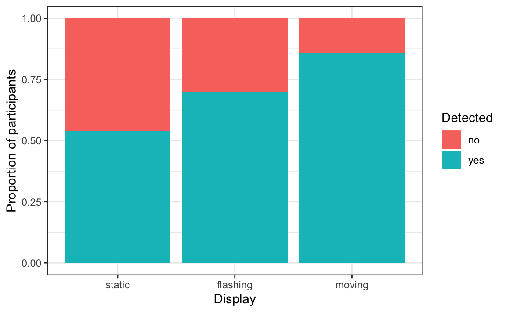

library(tidyverse)
library(behdslabs)27 Two Categorical Variables: the Chi-square Test
Draft
This chapter is a draft, written with an AI assistant (Claude) on 29 October 2026, and not yet reviewed by the instructor. It may be substantially rewritten or removed.
So far, our outcomes were numbers: reaction times, scores, error counts. Many behavioural outcomes are categories instead: whether a participant detected a target or not, which of two interfaces they preferred, whether an application was funded. When both variables are categorical, means make no sense: we count how many observations fall in each combination of categories, and we ask whether the two variables are associated. The usual tool is the chi-square test (χ², from the Greek letter chi).
This chapter is original material written for this book; it is not part of Irizarry’s Introduction to Data Science.
27.1 Contingency tables
Suppose 150 participants take part in a visual detection study. Each participant sees a single display, in one of three versions (a static, a flashing or a moving target), and gives a single answer: they either detected the target or not. The data are simulated:
detection <- tibble(
display = factor(rep(c("static", "flashing", "moving"), each = 50),
levels = c("static", "flashing", "moving")),
detected = c(rep(c("yes", "no"), c(27, 23)),
rep(c("yes", "no"), c(35, 15)),
rep(c("yes", "no"), c(43, 7)))
)A table of counts for two categorical variables is called a contingency table:
tab <- table(detection$display, detection$detected)
tab
#>
#> no yes
#> static 23 27
#> flashing 15 35
#> moving 7 43Because the groups can have different sizes, we compare proportions within each row. prop.table(tab, 1) divides each row by its total:
prop.table(tab, 1) |> round(2)
#>
#> no yes
#> static 0.46 0.54
#> flashing 0.30 0.70
#> moving 0.14 0.86A stacked bar plot of the same proportions:
detection |>
ggplot(aes(display, fill = detected)) +
geom_bar(position = "fill") +
labs(x = "Display", y = "Proportion of participants", fill = "Detected")
The moving target was detected most often, the static one least often. Could differences this large arise by chance if the display had no effect on detection?
27.2 Expected counts and the test
The chi-square test starts from what the table would look like if the two variables were independent. Overall, 105 of the 150 participants detected the target, about 70%. If the display made no difference, we would expect about 70% of each group of 50 to detect it. These are the expected counts, which R computes for us:
chisq.test(tab)$expected
#>
#> no yes
#> static 15 35
#> flashing 15 35
#> moving 15 35The test compares the observed counts with the expected ones. For each cell it takes the squared difference between observed and expected, divided by the expected count, and adds them up:
\[ \chi^2 = \sum \frac{(\text{observed} - \text{expected})^2}{\text{expected}} \]
The larger the differences, the larger χ², and the smaller the p-value:
chisq.test(tab)
#>
#> Pearson's Chi-squared test
#>
#> data: tab
#> X-squared = 12, df = 2, p-value = 0.002The degrees of freedom are (rows − 1) × (columns − 1) = 2. The p-value is small: detection depends on the display. Like the ANOVA (Chapter 25), the test only says that there is an association somewhere in the table; to see where, look at the proportions, or compare pairs of displays, correcting for multiple comparisons (Chapter 26).
27.3 Two-by-two tables
The simplest contingency table has two rows and two columns. The tech_grant_funding_gender_gap dataset in behdslabs records, for several technology domains, how many grant applications were submitted and funded, separately for men and women. Summing over domains, we can build a two-by-two table of funded and not-funded applications by gender:
totals <- tech_grant_funding_gender_gap |>
summarize(across(c(applications_men, applications_women,
awards_men, awards_women), sum))
grants <- matrix(c(totals$awards_men, totals$applications_men - totals$awards_men,
totals$awards_women, totals$applications_women - totals$awards_women),
nrow = 2, byrow = TRUE,
dimnames = list(gender = c("men", "women"), funded = c("yes", "no")))
grants
#> funded
#> gender yes no
#> men 580 2690
#> women 354 2022
prop.table(grants, 1) |> round(3)
#> funded
#> gender yes no
#> men 0.177 0.823
#> women 0.149 0.851About 17.7% of applications by men were funded, against 14.9% by women. Is this difference larger than chance?
chisq.test(grants)
#>
#> Pearson's Chi-squared test with Yates' continuity correction
#>
#> data: grants
#> X-squared = 8, df = 1, p-value = 0.005The output mentions Yates’ continuity correction: for two-by-two tables, chisq.test() applies by default a small correction that makes the test slightly more conservative. With large counts, as here, it makes little difference. The difference in success rates is statistically significant. Whether it reflects a bias is a different question: for example, men and women may apply in different proportions to domains with different success rates, which is worth checking before drawing conclusions (see exercise 1).
27.4 Assumptions
Two conditions matter in practice.
Each observation is counted once, and observations are independent. Every participant must appear in only one cell of the table. If each participant contributes many trials, for example 100 detection trials each, the trials of the same person are not independent, and a chi-square test on the trial counts gives p-values that are far too small. Summarize per participant first (for example, each participant’s proportion of detected targets, compared with an ANOVA), or use models designed for repeated observations, which we meet later in the course.
The expected counts are not too small. The chi-square test is an approximation that works well when every expected count is at least about 5. With small samples, use Fisher’s exact test, fisher.test(), which does not rely on this approximation. Suppose a small pilot study with 12 participants:
pilot <- matrix(c(2, 4,
6, 0),
nrow = 2, byrow = TRUE,
dimnames = list(display = c("static", "moving"), detected = c("yes", "no")))
pilot
#> detected
#> display yes no
#> static 2 4
#> moving 6 0
chisq.test(pilot)$expected
#> Warning in chisq.test(pilot): Chi-squared approximation may be
#> incorrect
#> detected
#> display yes no
#> static 4 2
#> moving 4 2
fisher.test(pilot)
#>
#> Fisher's Exact Test for Count Data
#>
#> data: pilot
#> p-value = 0.06
#> alternative hypothesis: true odds ratio is not equal to 1
#> 95 percent confidence interval:
#> 0.0 1.1
#> sample estimates:
#> odds ratio
#> 0All expected counts are below 5, and chisq.test() would warn that the approximation may be incorrect; Fisher’s test is the right choice here.
27.5 Effect size: Cramér’s V
As with other tests, a p-value does not tell us how strong an association is, and with very large samples even tiny differences become significant. A common effect size for contingency tables is Cramér’s V, which goes from 0 (no association) to 1 (perfect association). It is computed from χ², the total number of observations \(N\), and the smaller of the number of rows and columns:
chi2 <- chisq.test(tab)$statistic
N <- sum(tab)
k <- min(dim(tab))
sqrt(chi2 / (N * (k - 1)))
#> X-squared
#> 0.285Rules of thumb call about 0.1 a small, 0.3 a medium and 0.5 a large association, for tables with two columns; like all such rules, they are conventions, not laws.
27.6 Goodness of fit
The chi-square test can also compare the counts of a single categorical variable with the proportions we expect. For example, in a four-choice task, are participants’ answers spread equally over the four response keys, or do they prefer some keys?
keys <- c(A = 40, B = 20, C = 22, D = 38)
chisq.test(keys, p = rep(1/4, 4))
#>
#> Chi-squared test for given probabilities
#>
#> data: keys
#> X-squared = 11, df = 3, p-value = 0.01The argument p gives the expected proportions, here one quarter for each key. A small p-value suggests a response bias.
27.7 From tests to models
The chi-square test answers one question: are two categorical variables associated? When we want to estimate how much the probability of an outcome changes with several predictors at once, for example the probability of detecting a target depending on the display and on the participant’s age, the tool is logistic regression, which we meet at the end of the course.
27.8 Further reading
- D. Navarro, Learning Statistics with R, Chapter 12, Categorical data analysis: goodness of fit, the test of independence, Fisher’s exact test, effect sizes.
- R. A. Poldrack, Statistical Thinking for the 21st Century, Modeling categorical relationships.
27.9 Exercises
1. The tech_grant_funding_gender_gap dataset has one row per technology domain. Pick two domains and, for each one, build the two-by-two table of funded and not-funded applications by gender and run chisq.test(). Is the gender difference the same in every domain? How does this relate to the overall table of this chapter?
2. Take a random sample of 20 participants from detection (use set.seed(1) and slice_sample()), make the contingency table, and look at the expected counts. Run both chisq.test() and fisher.test(). Which one is appropriate, and why?
3. Compute Cramér’s V for the grants table. Compare it with the p-value: what does each one tell you?